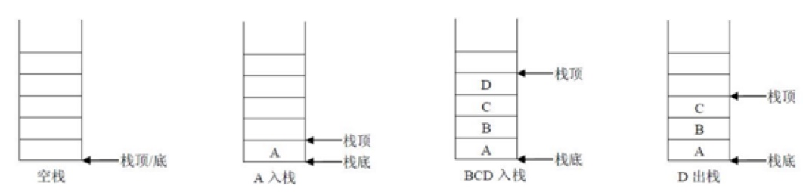
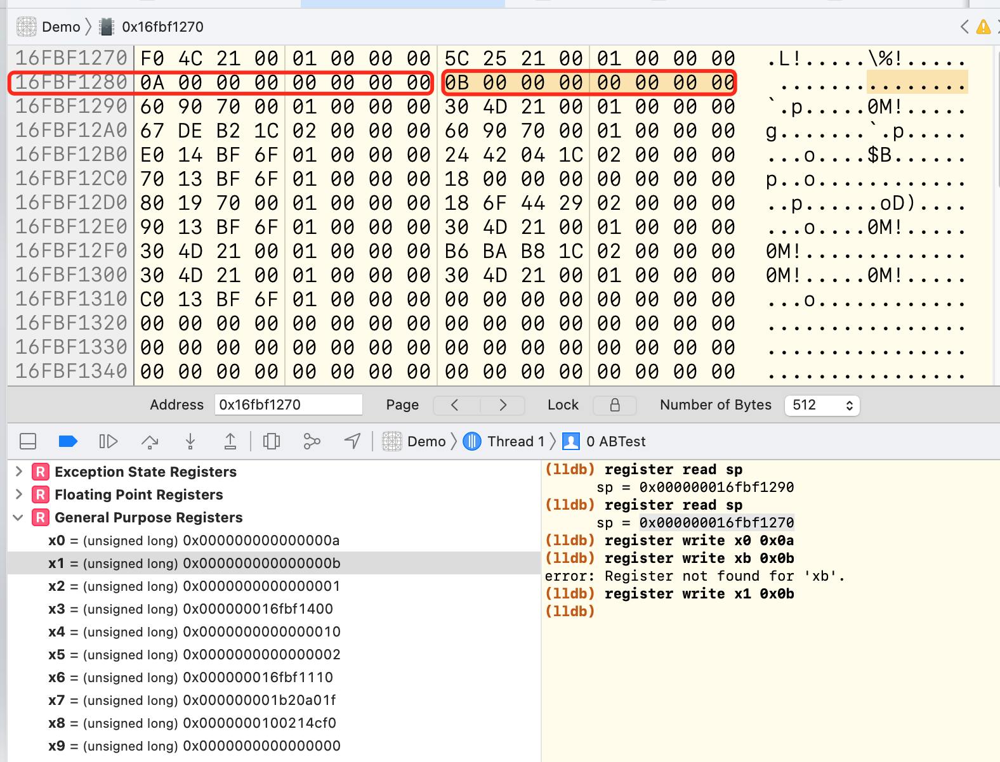
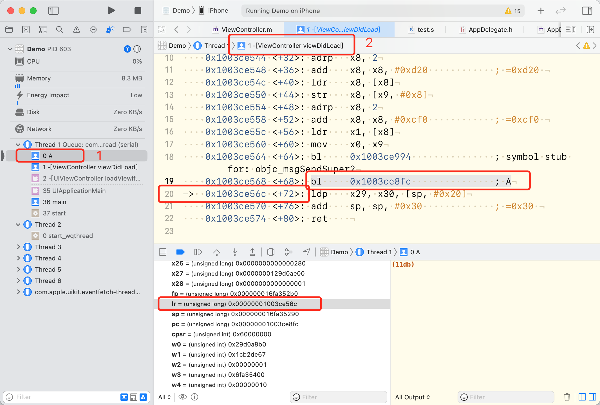

1. 关于CPU的补充
1.1 寄存器
CPU除了有控制器、运算器还有寄存器。其中寄存器的作用就是进行数据的临时存储。
CPU的运算速度是非常快的，为了性能CPU在内部开辟一小块临时存储区域，并在进行运算时先将数据从内存复制到这一小块临时存储区域中，运算时就在这一小快临时存储区域内进行。我们称这一小块临时存储区域为寄存器。
对于arm64系的CPU来说， 如果寄存器以x开头则表明的是一个64位的寄存器，如果以w开头则表明是一个32位的寄存器，在系统中没有提供16位和8位的寄存器供访问和使用。其中32位的寄存器是64位寄存器的低32位部分并不是独立存在的。
1.2 高速缓存
iPhoneX上搭载的ARM处理器A11它的1级缓存的容量是64KB，2级缓存的容量8M.
CPU每执行一条指令前都需要从内存中将指令读取到CPU内并执行。而寄存器的运行速度相比内存读写要快很多,为了性能,CPU还集成了一个高速缓存存储区域.当程序在运行时，先将要执行的指令代码以及数据复制到高速缓存中去(由操作系统完成).CPU直接从高速缓存依次读取指令来执行.
1.3 寄存器
1.3.1 数据地址寄存器
数据地址寄存器通常用来做数据计算的临时存储、做累加、计数、地址保存等功能。定义这些寄存器的作用主要是用于在CPU指令中保存操作数，在CPU中当做一些常规变量来使用。
ARM64中：
- 64位 x0-x30，XZR（零寄存器）
- 32位 w0-w30，WZR（零寄存器）
1.3.2. 浮点和向量寄存器
因为浮点数的存储以及其运算的特殊性，CPU中专门提供浮点数寄存器来处理浮点数。
- 64位: d0-d31
- 32位: d0-d31
现在的CPU支持向量运算.(向量运算在图形处理相关的领域用得非常的多)为了支持向量计算系统了也提供了众多的向量寄存器.
向量寄存器 128位:V0-V31
1.3.3 SP、FP寄存器
说这两个，需要先说一下栈。

栈是一种具有特殊的访问方式的存储空间，先进后处，后进先出。（Last In Out First）
- sp寄存器在任意时刻会保存栈顶的地址。
- fp寄存器也成为x29寄存器。属于通用寄存器，在默写时刻我们利用它报错栈底的地址。

这个图很好的说明了栈是从高地址往低地址开始读写操作的，堆是从低地址向高地址开始的，当栈不断的开辟空间，堆也不断的开辟空间，导致两个区域重叠，就会导致崩溃。也就是常说的堆栈溢出。（堆、栈上的空间是不固定的）
这里我们说个题外话，是不是所有的死循环都会导致崩溃？答案是否定的，只有不断的开辟空间的死循环才会导致崩溃，上一章我们最后的例子就是很好的说明，因为没有开辟空间。
2. 函数调用栈
以下代码是常见的函数调用开辟和恢复栈空间。
1 | sub sp, sp, #0x40 ; 拉伸0x40（64字节）空间 |
这里需要注意的是： 读、写数据都是往高地址读、写。
2.1 内存读写指令
- str指令：store register，将数据从寄存器中读出来，存在内存中。每次操作8个字节
- ldr指令：load register，将数据从内存中读出来，存在寄存器中。每次操作8个字节
- stp指令：str指令的变种，每次操作16个字节。
- ldp指令：ldr指令的变种，每次操作16个字节。
2.2 堆栈操作
1 | _ABTest: |
- 我们将上面的代码放在『.s』文件中，在ViewControler中声明
int ABTest();方法. - 在viewDidLoad中调用
ABTest();，并在这一行打上断点。运行触发断点之后，按住ctrl键的同时点击小箭头，进入汇编，（按住ctrl是为了不让程序执行下一步） - 在右下命令行中输入
register read sp查看当前sp所在的位置，是sp = 0x000000016fbf1290 - 点击下一步，开辟栈空间，重复第3步的操作，查看
sp = 0x000000016fbf1270 - 进入View Memory，定位到sp所在的位置，查看在
0x000000016fbf1280位置的值是什么。 - 这个时候，分别执行
register write x0 0x0a，register write x1 0x0b，修改x0，x1的值，执行下一步。 - 发现在左边通用寄存器中x0，x1的值已经发生变化。这时候重复第5步操作。查看是否已经发生变化。（需要切换页）
- 执行下一步，交换x0，x1的值。我们发现左边，通用寄存器中x0，x1的值已经发生了变化，这时候重复第5步，查看内存中的值是否有变化？是没有发生变化的哈~
- 销毁当前栈空间。重复第3步，查看当前sp的地址。是
sp = 0x000000016fbf1290
如图：

3. bl和ret指令
3.1 bl
bl其实存在两个操作：
- 将下一条指令的地址放入lr（x30）寄存器。也就是保存回家的路。
- 转到对应的跳转中执行指令，当指令执行完成后，会根据lr中的地址，返回继续执行。
通俗的讲就是离家出走了，执行ret的时候，根据lr中的地址，找到回家的路。
3.2 ret
默认使用lr（x30）寄存器的值，通过底层指令提示CPU此处作为下条指令地址。这是ARM64平台的特色指令，它面向硬件方面做了优化处理。
3.3 x30寄存器（lr寄存器）
x30寄存器存放的是函数的返回地址，当ret指令执行时，会寻找x30寄存器保存的地址值。
这也就是，为啥上一章，最后的代码会造成循环引用的原因，因为x30寄存器的地址指向的就是当前bl的下一行代码。
3.4 操作
我们简写一下上一章的代码
1 | _A: |
在ViewDidLoad中执行A()，并打断点。执行上面的代码。按住ctrl键点击小剪头，进入A的汇编。查看当前lr寄存器中存放的地址是谁。然后按照下图所示进行操作，进入ViewDidLoad的汇编。

我们看到了19行执行了 bl A的操作，也就是在ViewDidLoad中执行A()操作。而lr寄存器所存储的地址就是第20行所在的位置，也就是存储了执行A之后返回ViewDidLoad的地址。0x1003ce56c
点击继续执行，修改x0寄存器的值，继续下一步。执行bl B
这时候我们发现lr寄存器中存储的值已经被修改了，变成了A汇编代码中bl B下一行的地址。
lr = 0x1003ce904，这里修改了x0的值。下一步。继续执行B中的ret操作，发现回到了A，回到了
0x1003ce904，继续执行发现修改了x0的值。下一步，执行ret，发现又回到了A中的
0x1003ce904，不断的执行，发现压根回不去ViewDidLoad了。
这就是上一章中说的问题，lr寄存器的值被修改了，导致回不去了。那我们应该怎么处理呢？
最合理的方案是在执行bl操作之前，将bl的下一行地址存放在栈中。如果将值存放在其他寄存器中是绝对不安全的，因为你不知道什么时候就会被系统覆盖。
3.4.1 解决死循环
我们为了解决上面的问题，我们查看系统是怎么处理这个问题的。
1 | void c() { |
同样，在ViewDidLoad中执行c()。
1 | Demo`c: |
在c的汇编里头，我们仔细看下系统是什么处理lr寄存器的。
我们看到了x29和x30两个寄存器。x29是fp寄存器，指向栈底；x30寄存器就是lr寄存器。
stp x29, x30, [sp, #-0x10]!这是汇编代码简写的形式的。这句话的意思是sp -= 0x10开辟空间，把x29和x30寄存器的值存放在开辟的空间里。『!』的操作是针对sp的，『[]』的操作是针对x29，x30寻址的。mov x29, sp将sp的值赋给x29寄存器。啥意思，fp跟sp指向相同的位置。栈顶栈底指向同一位置，啥情况？之后说哈~- bl操作，执行d()
ldp x29, x30, [sp], #0x10跟第一句差不多，『[]』就是寻址，将sp对应的两个地址的值赋值给x29，x30。第一步是存，这一步是取。然后执行 sp += 0x10的操作，释放栈空间。- 执行ret操作，我们就能轻松的回到ViewDidLoad了。因为lr寄存器中的地址正是我们一开始存的值。
在执行的过程中，我们一步步查看lr寄存器的值看是怎么变化的。就能清晰明了了。
这个时候，我们就可以修改上面的代码了
1 | _A: |
执行该代码，我们按照栈操作3.4的流程，查看整体流程，看x30寄存器存放读取的过程，配合View Memory使用会更爽哈~
这里把代码做一下修改，在A中str x30, [sp, #-0x8]!将16个字节改成8个字节会怎样？跑一遍试试看
会发生crash对不对。因为在ARM64里面，对栈的操作是16个字节对齐的。所以开辟空间操作一定是16字节的倍数来进行的。